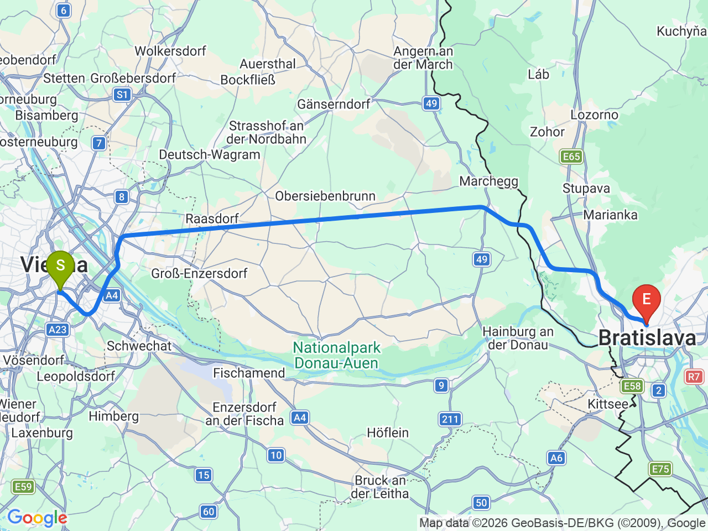
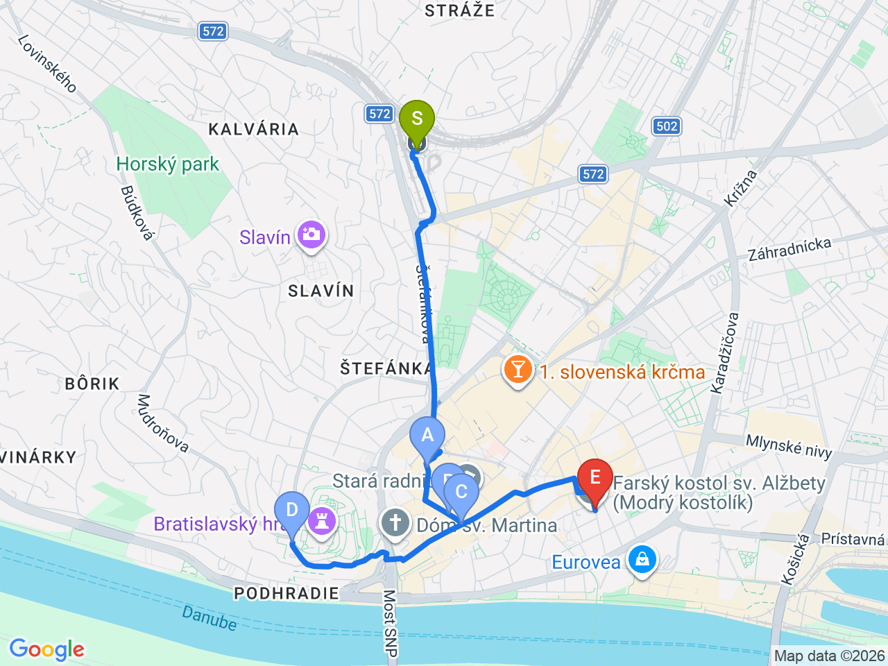

Day 35 · 2026-09-19（六）
奧地利・薩爾茲堡/德國國王湖/維也納 Day 8/10
跨國一日遊：斯洛伐克布拉提斯拉瓦
REX直達火車不到1小時，舊城迷你好逛，城堡、老城門、俏皮銅像一次收集
💱斯洛伐克跟奧地利一樣使用歐元，不用另外換錢；REX區域車 Wien Hauptbahnhof↔Bratislava hlavná stanica 車程約56分鐘、每小時1-2班，當天現場買票或用 ÖBB App／REX 官網皆可，不用早鳥
維也納↔布拉提斯拉瓦

布拉提斯拉瓦舊城

固定時間行程DAY 35
| 時間 | 地點 | 地點 (英文) | 交通方式／班次 | 價格 | 預計停留(分鐘) | 備註 |
|---|---|---|---|---|---|---|
| 08:30 | 搭 REX 區域車前往布拉提斯拉瓦 | 車程約56分鐘，每小時1-2班 | Wien Hauptbahnhof 出發，飯店走過去即達 | |||
| 09:30 | 抵達 Bratislava hlavná stanica | 1Bratislava hlavná stanica, Bratislava, Slovakia | 步行進舊城約15分鐘 | |||
| 17:30 | 搭 REX 返回維也納 | 車程約56分鐘 | 建議傍晚車班較密集時段返回 | |||
| 18:30 | 抵達 Wien Hauptbahnhof |
彈性探索景點DAY 35
| 地點 | 地點 (英文) | 預計停留(分鐘) | 價格 | 備註 |
|---|---|---|---|---|
| 米迦勒門（Michalská brána） | AMichalská brána, Bratislava, Slovakia | 約20分鐘 | 塔樓約€5 | 舊城牆唯一保留下來的城門，可以爬上塔樓小小繞一圈 |
| 馬克西米連噴泉＋主廣場 | BMaximiliánova fontána, Bratislava, Slovakia | 約20分鐘 | 免費 | Hlavné námestie 主廣場中心，周邊咖啡座很多 |
| 午餐：舊城傳統餐廳 | 見上方三餐資訊 | |||
| 拍照的水管工人（Čumil） | CČumil, Bratislava, Slovakia | 約10分鐘 | 免費 | 從人孔蓋探出頭的俏皮銅像，布拉提斯拉瓦最著名的打卡點之一 |
| 布拉提斯拉瓦城堡 | DBratislavský hrad, Bratislava, Slovakia | 約60分鐘 | 庭院免費／內部博物館約€10-12 | 山丘上白色城堡，居高俯瞰多瑙河與舊城，光走外圍看風景就很值得 |
| 藍色小教堂（Modrý kostolík） | FFarský kostol sv. Alžbety, Bratislava, Slovakia | 約20分鐘 | 免費（外觀） | 整棟淡藍色 Art Nouveau 建築，離舊城中心稍遠（約10-15分鐘步行），體力許可再排 |
每日三餐
早餐
飯店早餐ibis Wien Hauptbahnhof
午餐
舊城傳統斯洛伐克餐廳（自由選擇）約 €10-18／人
📍 Bratislava Old Town, Slovakia推薦嚐嚐 bryndzové halušky（斯洛伐克起司馬鈴薯疙瘩）；舊城裡選擇很多，隨興找一間評價不錯的即可，不特別指定店家
晚餐
回維也納老城區餐廳（自由選擇）約 €15-25／人
傍晚搭車回維也納，晚餐可以在中央車站附近或舊城解決，累了就近吃也行
住宿資訊